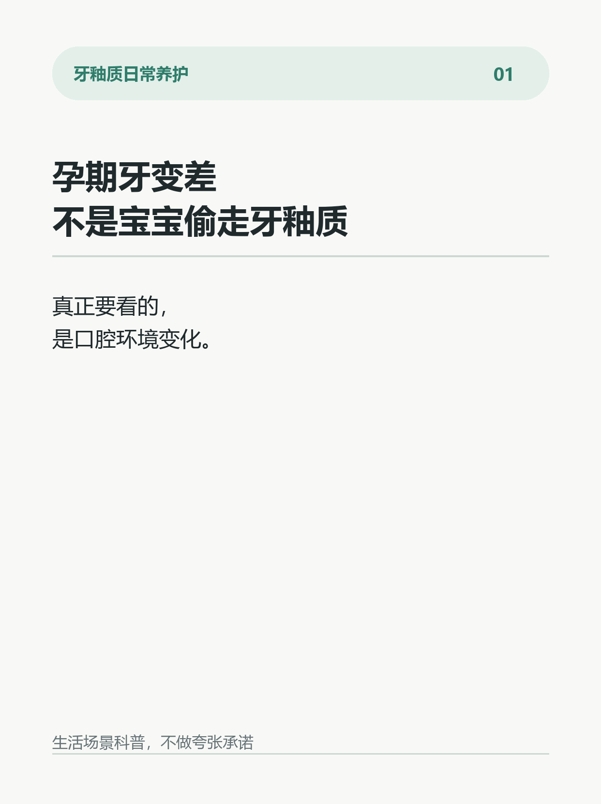
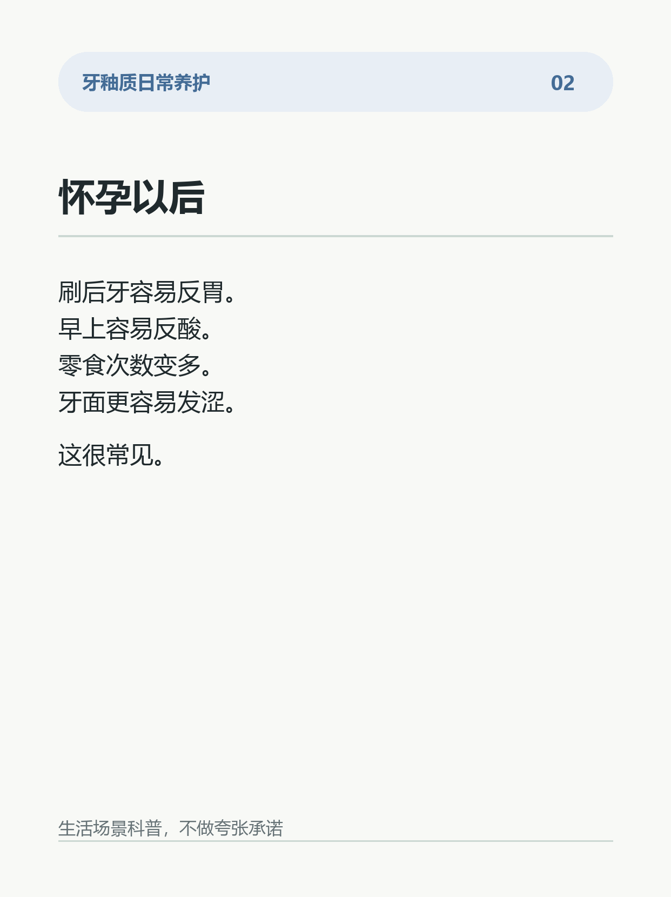
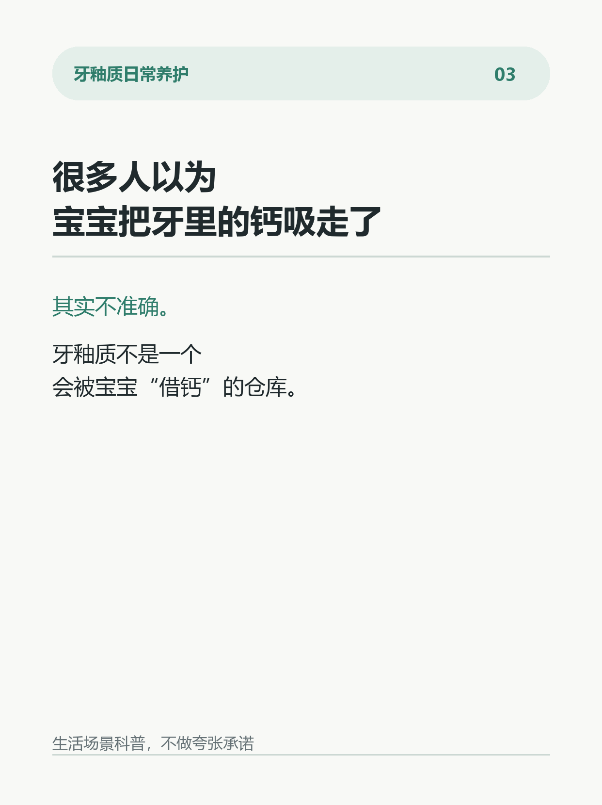
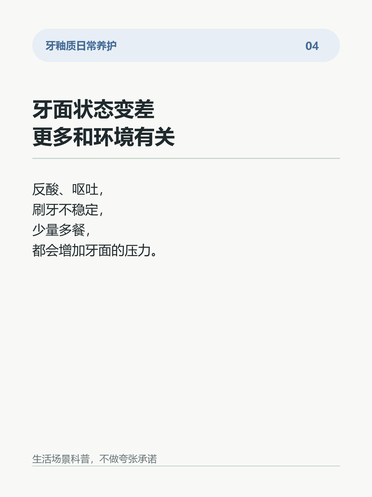
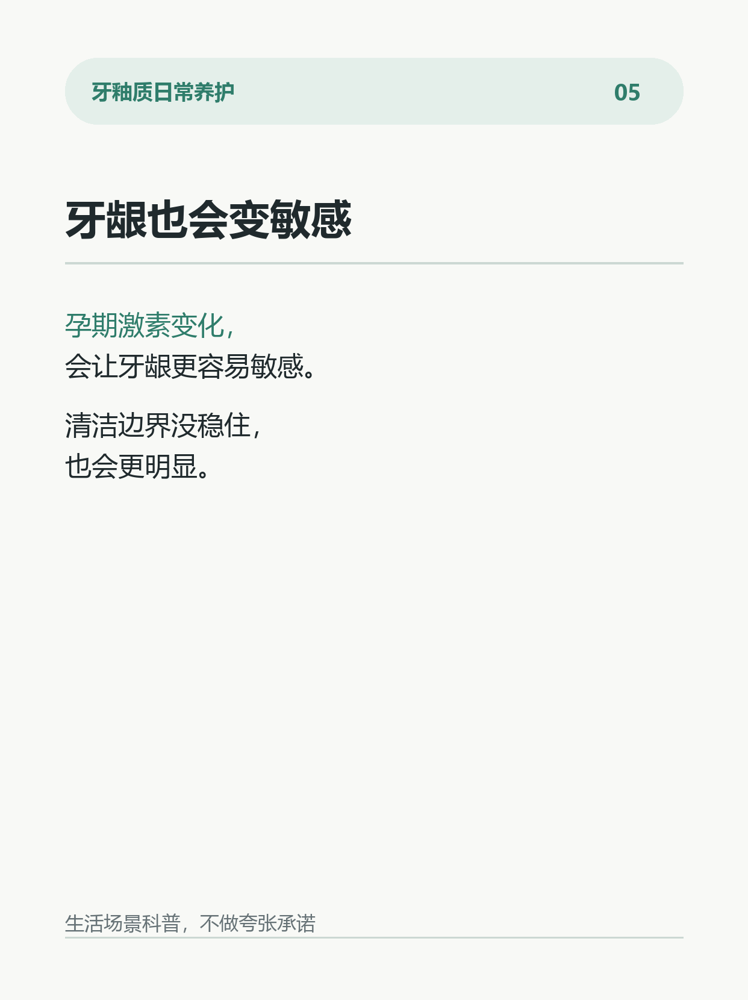
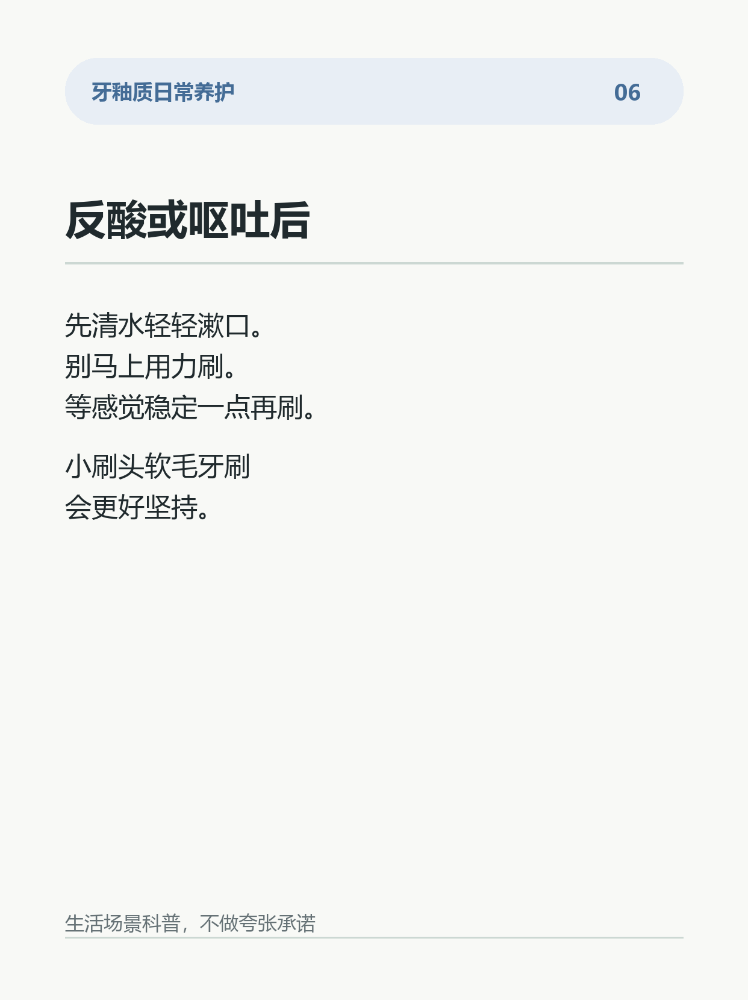
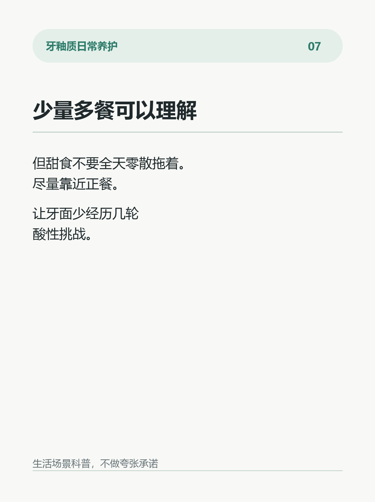
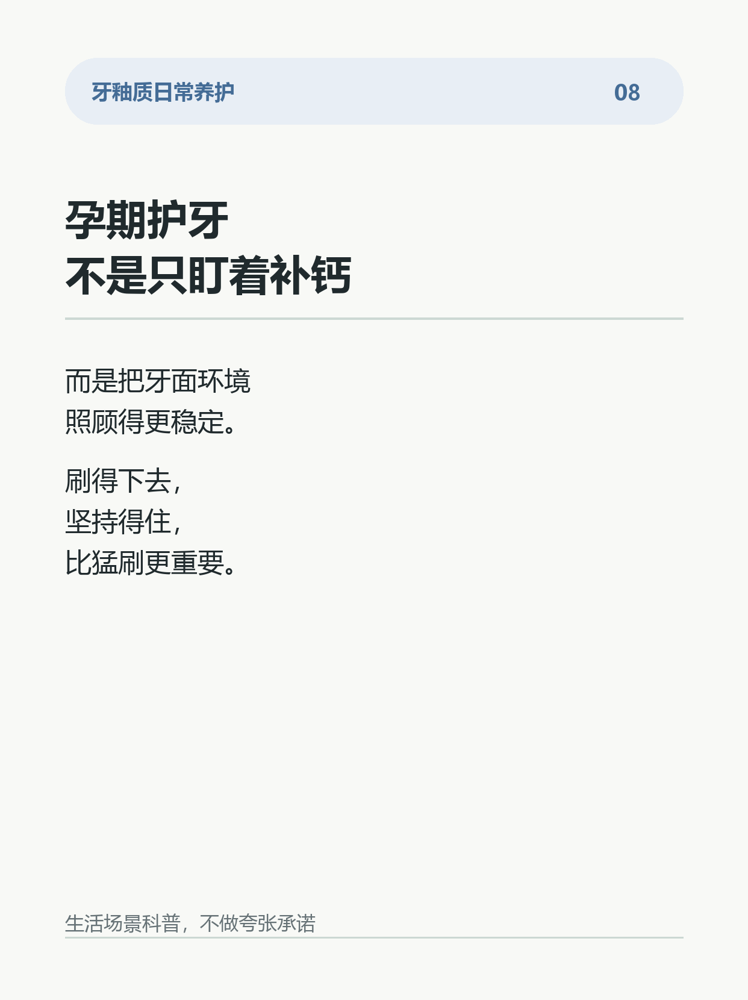

孕期牙变差，不是宝宝偷走牙釉质
怀孕以后，很多人会突然发现：
以前刷牙挺正常，现在一刷后牙就反胃。
早上容易反酸。
零食频率也变高了。
牙面好像更容易发涩、发酸。
于是有人会说：
是不是宝宝把牙里的钙吸走了？
这个说法不准确。
牙釉质不是一个会被宝宝“借钙”的仓库。孕期牙面状态变差，更多和口腔环境变化有关：
激素变化会让牙龈更容易敏感；
反酸和呕吐会让牙面短时间接触酸；
刷牙反胃会让清洁变得不稳定；
少量多餐、零食变多，也会让牙面面对更多次酸性挑战。
所以重点不是“补多少钙牙就没事”。
重点是把牙面环境稳住。
更实用的做法：
1. 反酸或呕吐后，先用清水轻轻漱口。
2. 别马上用力刷，等口腔感觉稳定一点再刷。
3. 牙刷选小刷头、软毛，减少反胃感。
4. 少量多餐时，尽量把甜食集中到正餐附近。
5. 含氟牙膏按日常习惯使用，刷完轻吐泡沫即可。
6. 如果牙龈经常出血、牙酸明显或口气变化大，建议做一次口腔检查。
很多人以为：
孕期牙变差，是宝宝“偷钙”。
其实更常见的问题是：
口腔环境变复杂了，牙面养护没有跟上。
这不是制造焦虑。
只是提醒：孕期更要把刷牙、漱口、饮食节奏做得稳定一点。
你身边有没有人孕期刷牙特别容易反胃？
#孕期口腔护理 #牙釉质 #护牙日常 #刷牙习惯 #牙面状态 #口腔护理 #生活小习惯 #牙齿敏感








参考来源与边界
# 参考来源
1. American Dental Association / MouthHealthy. Pregnancy.
https://www.mouthhealthy.org/all-topics-a-z/pregnancy
2. Centers for Disease Control and Prevention. Pregnancy and Oral Health.
https://www.cdc.gov/oral-health/prevention/pregnancy-and-oral-health.html
3. American College of Obstetricians and Gynecologists. Oral Health Care During Pregnancy and Through the Lifespan.
https://www.acog.org/clinical/clinical-guidance/committee-opinion/articles/2013/08/oral-health-care-during-pregnancy-and-through-the-lifespan
4. National Maternal and Child Oral Health Resource Center. Oral Health Care During Pregnancy: A National Consensus Statement.
https://www.mchoralhealth.org/PDFs/OralHealthPregnancyConsensus.pdf
5. American Dental Association / MouthHealthy. Brushing Your Teeth.
https://www.mouthhealthy.org/all-topics-a-z/brushing-your-teeth
# 证据边界
这些资料可以支持：孕期口腔环境会受激素、呕吐反酸、饮食节奏和清洁习惯影响；孕期可以进行常规口腔检查；日常含氟牙膏和稳定刷牙习惯有基础护理价值。
这些资料不能支持：宝宝会直接偷走牙釉质里的钙；单靠补钙就能解决所有牙面问题；任何产品可以替代口腔检查或承诺绝对结果。